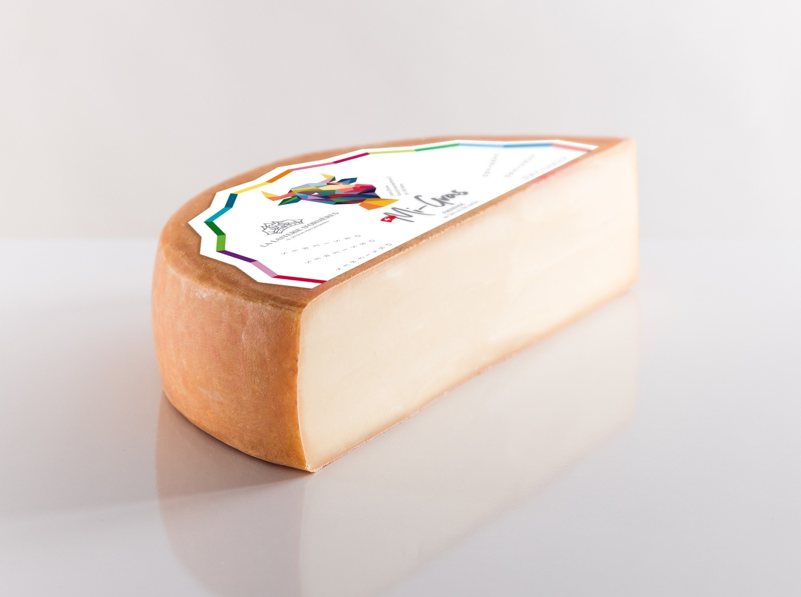
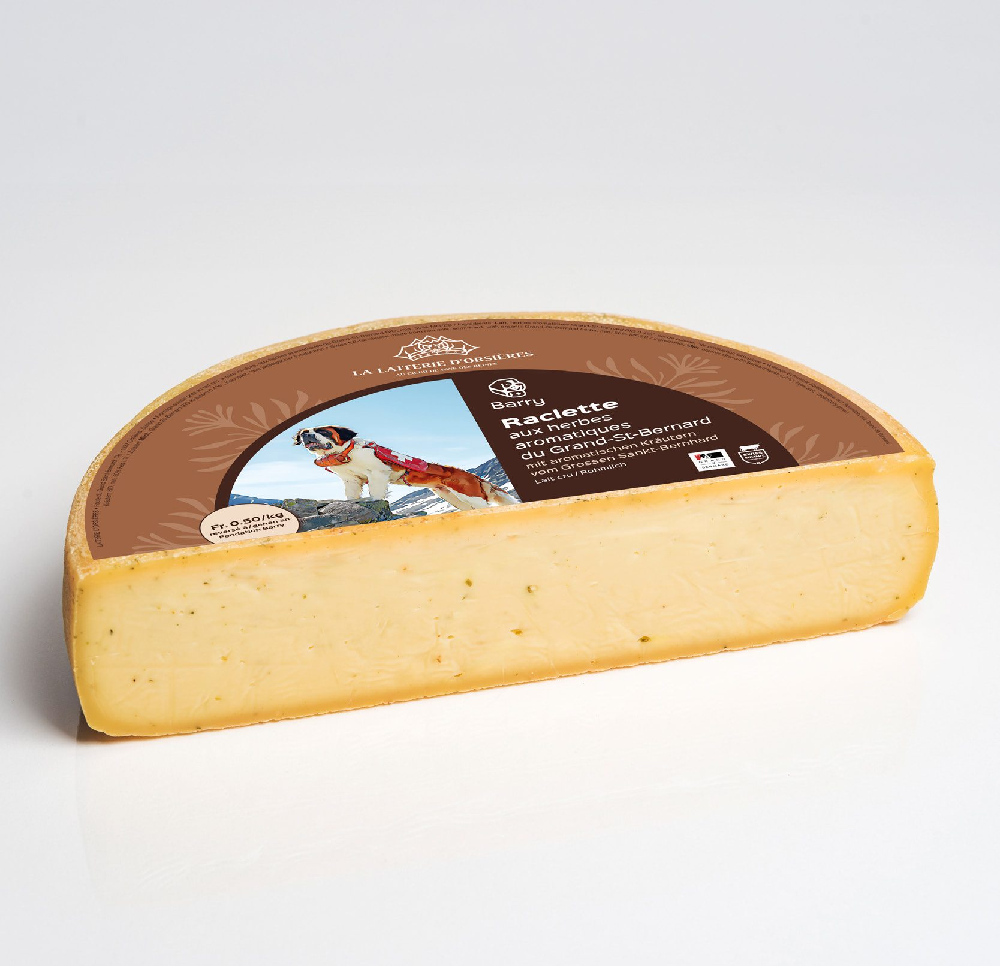

Síť míst Raclette Point Original, kde se škrábe Swiss AOP sýr z mlékárny Laiterie d’Orsières v kantonu Valais. Podle vaší polohy vás navedeme k nejbližšímu Pointu v Google Maps. Svůj podnik můžete o stejný zážitek rozšířit.
Barevná hlava krávy je designová značka mlékárny z Valais. Tak značí sýry, které distribuujeme.
Swiss AOP sýr z mlékárny Laiterie d’Orsières, v srdci Pays des Reines, kanton Valais.
Raclette Point Original
Proč s námi spolupracovat
Hlavní výhody partnerství na jednom místě. Detaily formátů, podmínek a formulář najdete v nabídce Pro partnery.
Sýrová show, která přitahuje lidi
Vůně taveného AOP sýra, jiný styl grilování, přesné servírování a atmosféra Švýcarska. Zážitek, o kterém se mluví, který se sdílí s přáteli i na sítích a kvůli kterému se hosté vracejí. Stávají se z nich Raclette Lovers a pravidelní hosté.
Bez kvalifikovaného kuchaře
Celý systém je navržený na maximální efektivitu. Díky nerezovým troubám a grilům TTM zvládne servis jakýkoliv zaškolený člen obsluhy nebo baru.
Marže, která dává smysl
Švýcarské sýrové speciality mají u hostů po celém světě vysokou vnímanou hodnotu. Po zaškolení servírujete Raclette Menu na míru typu provozovny, bez navýšení mzdových nákladů.
Rychlý start
Kuchyň se nepřestavuje a o nová povolení žádat nemusíte. Všechno připravíme na míru k provozu, který už máte.
Jeden zaškolený pracovník plynule odbaví 8 až 16 porcí najednou.
Nulové stavební úpravy. Koncept patří přímo do vašeho stávajícího podniku.
Swiss AOP v nejvyšší kvalitě. Autentické sýry ze srdce švýcarského raclette, z kantonu Valais. Téhle pochoutce je víc než 700 let.
Obohaťte svůj podnik o legendární švýcarský zážitek. Bez statisícových investic a bez šéfkuchaře. Ke každému podniku a každé provozovně přistupujeme individuálně.
Je to prémiový sýrový koncept. Přivede nové hosty, zvedne průměrnou útratu a pomůže tam, kde chybí kvalitní personál. S tím se gastronomie potýká čím dál častěji.
Tři formáty partnerství
Vyberte si svůj Raclette Point Original
Zatím tři flexibilní moduly. Sednou na váš prostor i na to, co s ním chcete dělat.
Nejoblíbenější
Shop-in-shop
Gastro modul
Pro koho
Restaurace, hotely, bistra, kavárny, vinárny, bary, kempy a horské chaty.
Plocha
6 až 12 m²
Jde to do stávajícího interiéru nebo na terasu. Mobilní nerezový raclette stůl na kolečkách, se světlem, zvonem a zázemím. Nebo váš bar, část terasy či větší stůl. Dodáme grily TTM, nerezovou raclette troubu a podle místa i nerezový gril na oheň. K tomu marketing, branding výrobků s vaším logem a pravidelné suroviny. Žádné stavební zásahy. Spolupráci děláme od částečné po kompletní.
Pohyblivý Point
Stan nebo food truck
Pro koho
Eventové a cateringové agentury, gastro provozovatelé a lidé od festivalů.
Plocha
asi 12 až 16 m²
Svatby, firemní večírky, městské trhy a pop-up akce. Dostanete speciální vybavení, branding a pravidelné dodávky surovin. Všechno řešíme na míru a s každým klientem zvlášť.
Venkovní modul
Kontejner nebo kiosek
Pro koho
Frekventovaná místa ve větších městech, náplavky, lyžařská střediska a turistické resorty.
Plocha
16 až 25 m²
Designový venkovní modul na celoroční i sezónní prodej. Snadno se přemístí na novou lokaci. Cenová nabídka vzniká na míru, podle lokality a dohody zakladatele projektu s objednatelem.
Partnerství a srdce
Nejsme klasická síťová franšíza. Neplatíte žádné statisícové ani milionové vstupní poplatky za licenci a nesvazujeme vás neflexibilními korporátními pravidly.
Důvěra na dlouho
Hledáme partnery, kteří dělají svou práci s láskou, srdcem a profesionálně.
Dostupný vstup
Platíte za skutečné vybavení a příslušenství na míru, za zaškolení a za startovací branding.
Fér měsíční poplatek
Měsíční partnerský poplatek se domlouvá individuálně. Odvíjí se od velikosti Pointu, typu provozovny a lokality, aby byl pro podnik ziskový a motivující.
Osobní přístup
Jste partner, se kterým rozvíjíme švýcarskou gastro kulturu. Ne číslo v tabulce.
Co od nás získáte
Podpora ze všech stran
Když se stanete součástí rodiny Raclette Point Original, máte kompletní zázemí a know-how.
Technologie a vybavení
Speciálně navržená a certifikovaná celonerezová raclette trouba na 8 až 16 porcí najednou, nebo originální švýcarský gril TTM. K tomu servírovací náčiní, nerezové špachtle, dřevěné desky, stoly, zvon a branding.
Sýry přímo od zdroje
Pravidelné dodávky originálních Swiss AOP sýrů a certifikovaných fondue směsí za velkoobchodní ceny, a k tomu profesionální příslušenství. Podle sezóny třeba Raclette du Valais AOP z Orsières, bylinkový Barry, sýr s osmi druhy divokého pepře z Madagaskaru nebo Vacherin Fribourgeois.
Akademie za jeden den
Personál zaškolíme během jediného dne a předáme certifikaci Raclette Master. V manuálu je servírování, správné teploty, skladování sýrů a vedení show před hostem.
Marketing a mapa
Point zařadíme na oficiální mapu Raclette Point Original. Web a aplikace ukážou lokalitu, raclette menu a informace o místě. Dodáme podklady do nápojového a jídelního lístku, tiskoviny, grafiku na sítě, promo videa a stojánky na stoly.
Jak začít
Čtyři jednoduché kroky
Vyplňte formulář
Zanechte kontakt a základní informace o podniku nebo o záměru. Název, typ provozovny, město, telefon, e-mail a vaši představu. Zpráva odejde na milan@raclette-original.com a my se vám ozveme.
Konzultace
Osobně nebo online probereme prostory a představy. Domluvíme schůzku, navrhneme řešení a individuální podmínky.
Příprava a zaškolení
Doručíme vybavení, zaškolíme váš tým a nastavíme pravidelné dodávky AOP sýrů.
Slavnostní start
Společně odstartujeme první AOP raclette show a přivítáme nové hosty. U toho bude český a slovenský král a ambasador raclette Milan Kolář. Podle domluvy přijede i švýcarský král a ambasador Eddy Baillifard, případně další česká nebo slovenská osobnost.
Chci se stát raclette pointem
Vyplňte všechna pole. Nic nevynechte, ať víme, jak vám připravit nabídku vám na míru.
Zanechte kontakt a základní informace o podniku nebo o záměru. Zpráva odejde na milan@raclette-original.com a my se vám ozveme.
Vyplňte formulář níže, nebo zavolejte pro bližší informace.
Referencí jsou spokojení klienti, fotogalerie a desetitisíce servírovaných porcí. První Point vznikl jako originální koncept spolupráce. Partner Raclette Republic s ním vyjel na Streetfood Senec.
Těšíme se na spolupráci s vámi. Za pracovní tým Raclette Point Original.
Milan Kolář, československý král Raclette. +41 76 608 39 83, milan@raclette-original.com. Chemin des Grands Praz 81, 1965 Savièse, Švýcarsko.
Reference a média
Z grilu, z akcí a z pasování
Sýr na grilu, bochníky z Orsières a věta, kterou o českém králi řekl švýcarský mistr raclette.
Servis na akci. Rozteklý sýr se škrábe přímo z bochníku.

Bochník Raclette du Valais AOP. Sýry z mlékárny v Orsières, které distribuujeme.

Barry aux herbes du Grand-St-Bernard, sýr z mlékárny Laiterie d’Orsières.
Milan rakluje s takovou elegancí, ladností a láskou, jako hrál Roger Federer tenis.
O nás
Příběh českého krále
Milan Kolář byl pasován na českého krále Raclette a je ambasadorem pro Česko a Slovensko. Příběh se píše déle než dvacet dva let, od švýcarských Alp na český a slovenský stůl.